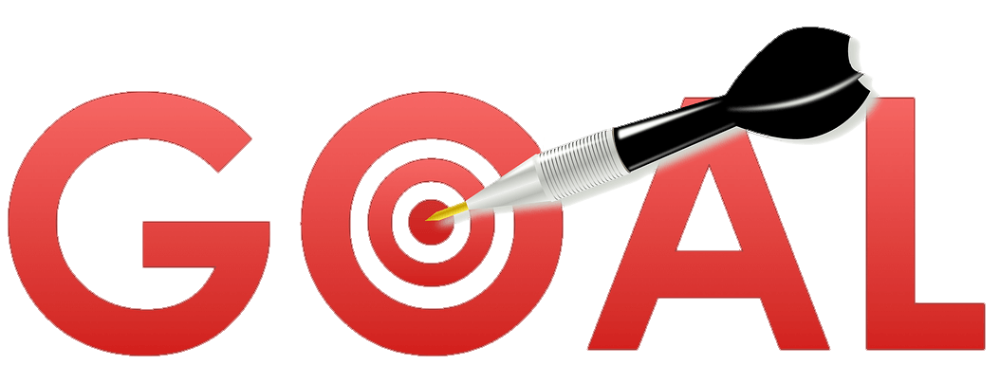

My Mission in 2022

My mission in 2022 is to learn about new technologies. I want to learn HTML,CSS,JavaScript and Javascript library React and the node js as well.

Its a saying that dream is not that thing that's you see in sleeping. It's that which will not let you sleep. My vision is to make a startup.

As great powers comes with great responsibility; like that big mission demands a lot of dedication. As per my vision my goal is to be daily based hard working.